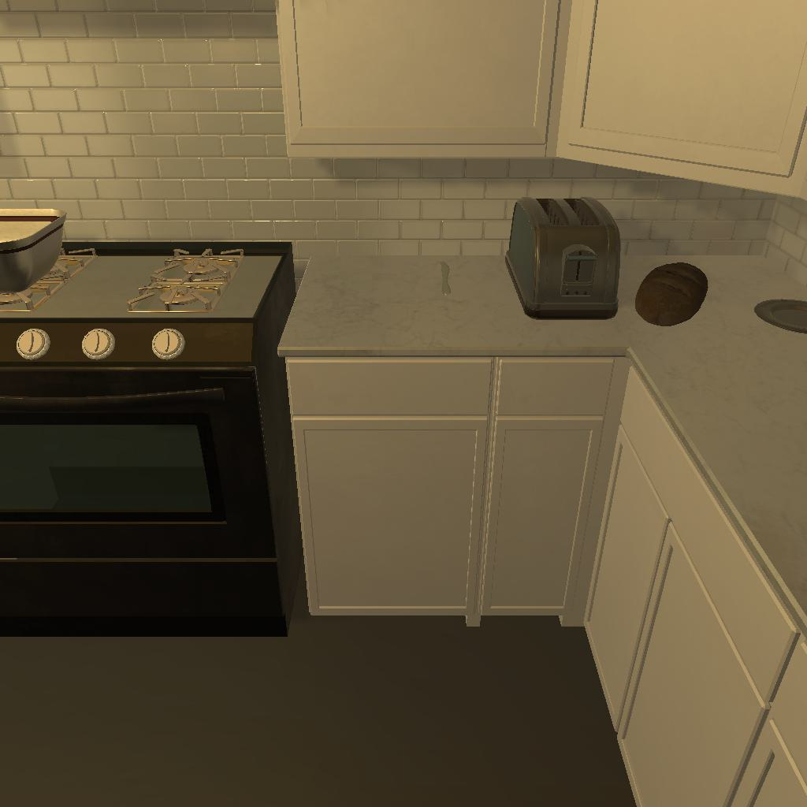
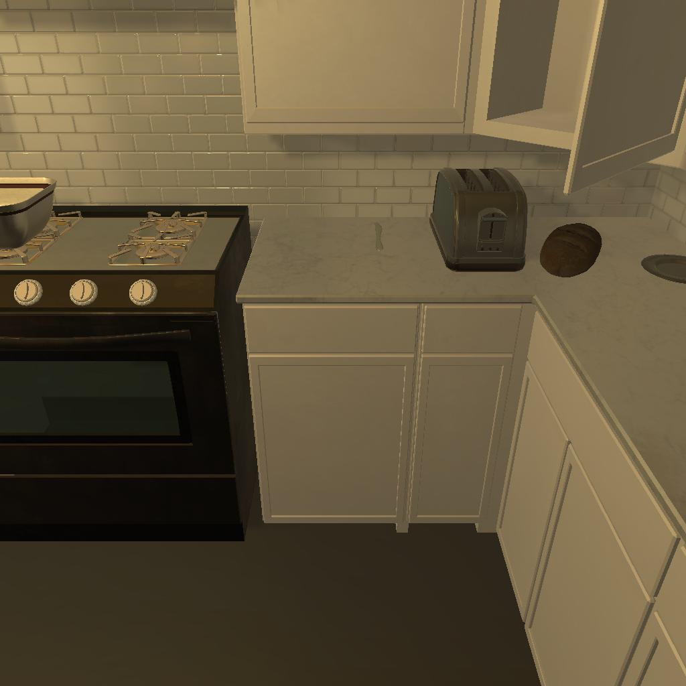

---------------------------------------------------------task: 29---------------------------------------------------------
--------------------------------------------------------------------------------------------------------------------------------------------------------------------
--------------------------------------------------------------------------------------------------------------------------------------------------------------------
Step:--------------------------------------------------------------------------10-------------------------------------------------------------------------------
----------------------------------------
VLM Prompt:
Image1:
Image2:
**Instruction**
1. Analyze the provided images to identify all visible household objects and compare the difference between images (e.h. whether the object is opened or not and taken on hand or not), focusing on those relevant to the task description "find two tomato and put them in countertop."
2. Use the analysis of images and the task hint "The agent must find an object of the desired type, pick it up, find the correct location to place it, put it down there, then look for another object of the desired type, pick it up, return to previous location, and put it down there with the other object." to answer the question: what is the most reasonable action in the choices for the task description "find two tomato and put them in countertop"?
3. Decide and write the answer using the template: The answer is: (i): , where i is the real number. If there is no desired object in images, search every place based on **Initial Observation** to find the object. And if no one is exactly correct, choose a similar answer.
**Initial Observation**
You are in the middle of a room. Looking quickly around you, you can see cabinet (1-20), toaster (1), microwave (1), garbagecan (1), countertop (1-2), drawer (1-4), stoveburner (1-4), sinkbasin (1), sink (1), fridge (1), diningtable (1), coffeemachine (1)
**Answer Choices**
(1): go to cabinet 1
(2): go to cabinet 3
(3): go to toaster 1
(4): go to cabinet 4
(5): go to cabinet 5
(6): go to microwave 1
(7): go to garbagecan 1
(8): go to countertop 1
(9): go to drawer 1
(10): go to cabinet 6
(11): go to cabinet 7
(12): go to drawer 2
(13): go to stoveburner 1
(14): go to stoveburner 2
(15): go to countertop 2
(16): go to cabinet 8
(17): go to cabinet 9
(18): go to cabinet 10
(19): go to drawer 3
(20): go to drawer 4
(21): go to stoveburner 3
(22): go to stoveburner 4
(23): go to cabinet 11
(24): go to cabinet 12
(25): go to cabinet 13
(26): go to cabinet 14
(27): go to sinkbasin 1
(28): go to sink 1
(29): go to cabinet 15
(30): go to fridge 1
(31): go to cabinet 16
(32): go to cabinet 17
(33): go to cabinet 18
(34): go to cabinet 19
(35): go to diningtable 1
(36): go to coffeemachine 1
(37): go to cabinet 20
(38): close cabinet 2
(39): take pot 1 from cabinet 2
(40): take bread 1 from cabinet 2
(41): take plate 1 from cabinet 2
(42): take stoveknob 1 from cabinet 2
(43): take stoveknob 2 from cabinet 2
(44): take stoveknob 3 from cabinet 2
(45): take butterknife 2 from cabinet 2
(46): examine cabinet 2
**Answer**
Let's think step by step by following the instructions.
----------------------------------------
----------------------------------------
Original Response:
Image Analysis:
- Both images show a kitchen with various household objects.
- There is no visible difference between Image 1 and Image 2.
- No tomatoes are visible in either image.
- Cabinet 2 is open in both images, revealing a pot, bread, plates, stove knobs, and a butterknife inside.
Task Hint Analysis:
- The agent must find two tomatoes and place them on the countertop.
- The agent must search for the tomatoes, pick them up, and place them on the countertop.
Based on the initial observation, tomatoes are not typically stored in toasters, microwaves, garbage cans, drawers, stove burners, sink basins, sinks, fridges, dining tables, or coffee machines. They are most likely to be found in cabinets or on countertops where food items are usually stored.
Since no tomatoes are visible on the countertops in the images, the most reasonable action is to search the cabinets for tomatoes.
Answer Selection:
Among the answer choices, the best action is to start with the cabinets closest to the agent's current position and work our way around the room. The cabinet numbers increase sequentially, so we'll start from the lowest number that hasn't been searched yet (since cabinet 2 is already open and does not contain tomatoes).
The answer is: (1): go to cabinet 1
----------------------------------------
----------------------------------------
>>> Refine Original VLM Response and Get Pure Action: go to cabinet 1
----------------------------------------
-----------------------------------------------------------------
Running time: 10.787104368209839 seconds
Total Money: 15.215920000000002
-----------------------------------------------------------------
-----------------------------------------------------------------
Text Observation:You arrive at loc 0. The cabinet 1 is closed.
-----------------------------------------------------------------
UNSUCCEED